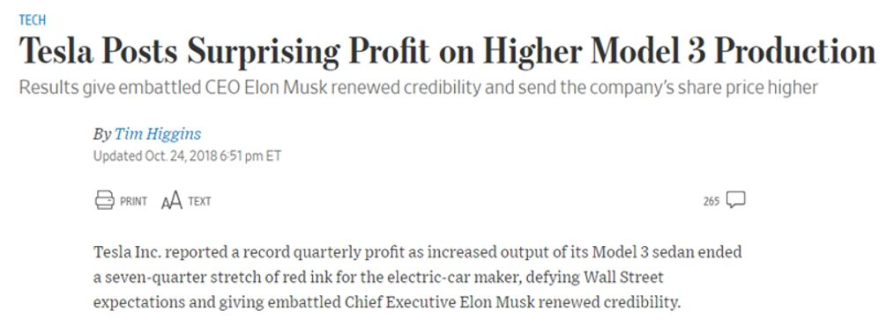
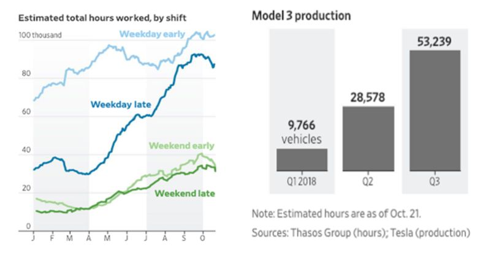
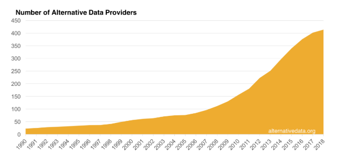
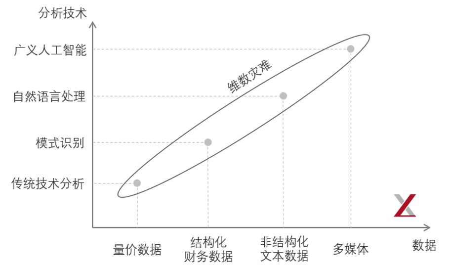
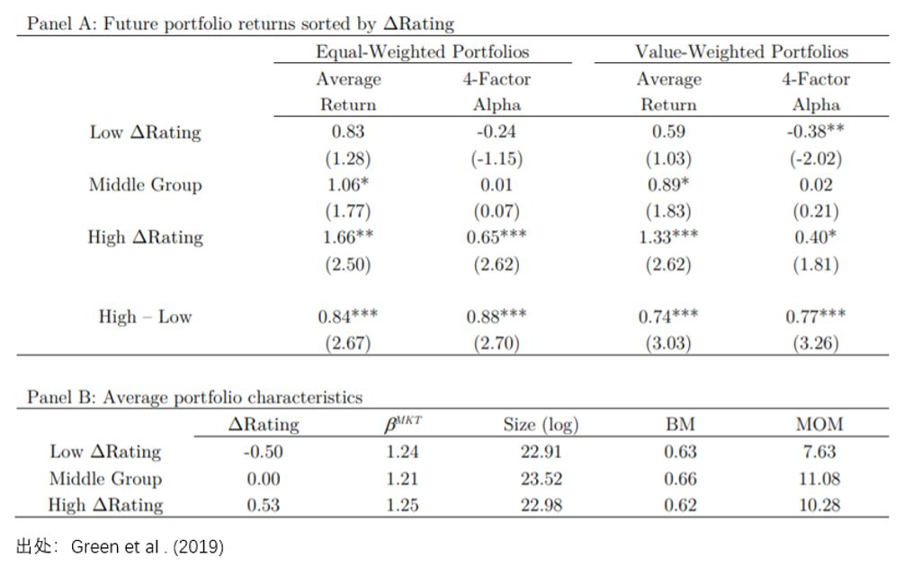
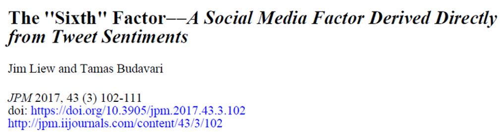
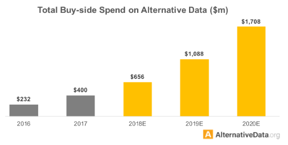

[TOC]
美国时间 2018 年 10 月 25 日，困境中的特斯拉（Tesla）股票录得 9.14% 的大涨，只因为在前一个交易日盘后发布的 2018 Q3 财报大超华尔街预期。财报显示，爆款 Model 3 的产量在过去一个季度较之前几乎翻番，这无疑给了投资人注入了一剂强心针，也引得市场一片狂欢。

面对 Model 3 产量的大增以及 9+% 大涨反映出的市场信心，最高兴的人当属 Tesla 的掌门人 Elon Musk。然而，除了 Musk 之外，同样高兴的另一群人大概要数另类数据公司 Thasos 以及它的很多对冲基金客户们。因为在 Tesla 发布 Q3 财报之前，这群人恐怕早就凭借着信息优势预判到了这一点，并提前在二级市场布局了。
Thasos 是怎么做到的？#
他们在一张在线地图上环绕 Tesla 位于 Fremont，California 的占地 370 英亩的工厂，创建了一个数字围栏，以隔离从 Tesla 工厂范围内发出的智能手机位置信号。Thasos 租赁了数不胜数的智能手机 APP 收集到的数万亿个地理坐标的数据库，并通过电脑程序密切监测从 Tesla 工厂中发出的手机信号。使用手机信号量进行估计，他们发现从 2018 年 6 月到 10 月，Tesla 工厂夜间轮班时间增加了 30%。

上图中左侧，横坐标 J、F、M 等为月份的英文首字母缩写。深蓝色曲线为通过手机信号估计出来的夜班（weekday late）工作时间。从图中清晰可见，在 6 月到 10 月之间，夜班工作时间较 Q2 有了大幅增长，意味着产能的提高。Thasos 将这个数据分享给了它的一些对冲基金客户。毫无疑问，这一数据发挥了巨大的作用。
这是将另类数据应用于二级市场投资的一个经典案例。
近年来，另类数据逐渐走进了二级市场投资的视线。随着使用常规数据 —— 量价、财务等 —— 构建交易信号、进行交易变得越来越拥挤，所获得的超额收益越来越被稀释，人们把目光投入到了另类数据上，希望通过独门数据源获取别人不知道的 α。另类数据也在借着这个风口获得了巨大的发展。来自 AlternativeData.org 的数据显示，在最近几年，另类数据 providers 的数量也出现了激增。

其实，另类数据并非什么新鲜概念。在几十年前，当我们只有量价数据计算均值、布林带的时候，财务报表数据就是另类数据；当财务数据被广泛使用后，分析师一致预期就是另类数据；当分析师一致预期家喻户晓之后，网络舆情数据就成了另类数据；当人们对网络舆情不再陌生之后，非结构化的文本数据就变成了另类数据……
当人们接触到新的数据源的时候，一般的反应都是“两眼发光”。诚然，在市场变得更加有效的今天，新的数据源无疑是尚未被过度使用的“净土”、充满潜在的机会。但是，另类数据真的像人们想象的那样前景一片光明吗？是否任意一个新的数据源都能拿过来加工出一个靠谱的 α 因子？另类数据能否成为二级市场的 silver bullet？面对这些问题，海外业界也不乏争议之声，有人支持也有人反对。
本文以“另类数据的前景和陷阱”为题，阐述对另类数据的五点思考（下文第 1 到 5 节），仅是希望抛砖引玉。由于知识和资历有限，可能有些观点不尽完善，也欢迎各位小伙伴指正。
##01 技术和数据需匹配
关于另类数据的第一个思考是新的数据类型需要相应的分析技术。当我们仅有量、价数据的时候，传统的技术分析，如均线、布林带就能发挥很大的作用。然而，这些技术分析对结构化的会计报表数据却难有作为。为此，相应的分析手段也应运而生，比如多因子模型等。而如今，如果想要分析非结构化文本数据以及更 general 的多媒体数据，则更是需要相应的技术，如自然语言处理和广义人工智能。显然，这对管理人和投资者都提出了越来越高的要求。

随着另类数据量的爆发，另一个需要面对的问题则是维数灾难。以预测股票收益率为例，另类数据代表着不同的自变量。由于股票的样本数据就那么多，随着自变量的增加，则股票样本数据在这些变量构成的空间内将会越来越稀疏。参数的激增使得预测模型存在更高的过拟合风险，且预测的 bias 和 variance 都会变大。
此外，使用不同另类数据构建因子也会出现之前公众号强调多次的多重检验（multiple testing）的问题。当使用大量模型分析同样的数据时，总会出现仅仅因为运气就十分显著的因子。这要求人们在统计手段上尽可能排除这种 lucky factor，而在金融学业务上去真正理解另类数据和未来预期收益率之间的逻辑。这也引出了第二点思考，使用另类数据需要很强的 domain knowledge。
02 Domain Knowledge#
全新的数据是一把“双刃剑”。一方面，因为还没有人用过，因此它不存在“拥挤”的问题；而另一方面，如果使用者不具备该数据所要求的 domain knowledge，那很可能不知道从何下手。
在我们的想象中，另类数据也许是这样的：有令人兴奋的故事、而且是已经被 vendors 处理好的结构化数据，我们能直接拿来当成因子对资产排排序，就能一顿操作猛如虎。然而，在实际中，另类数据更像是在一个没人去过的地方发现了一座山。然而，这座山里有没有矿、从哪里开始挖、到底能挖出什么，更多的要看使用者自己的本事。
“
There are plenty of inputs. But how do investors go about filtering the signal from the noise?
”
在海外业界，实力充沛的大型资产管理公司由于具备足够的人才储备，通常自己进行数据分析。另一方面，另类数据 vendors 也会通过推出一些听上去十分有希望的 scenarios 从而推销数据。除了买方、卖方外，市场上也涌现出了第三方研究机构，投资者会委托他们进行另类数据的研究。
对于另类数据的使用者来说，使用 vendors 或者第三方提供的加工后的数据无疑是最方便的。但这种做法存在的问题是，这些 use cases 会被卖给很多不同的使用者。这会增加另类数据的拥挤度，降低其在未来获取收益的能力。因此，对于使用者来说，掌握 domain knowledge —— 包括另类数据如何产生、背后的业务流程是什么、金融学含义有哪些等 —— 无疑是最重要的，这可以掌握研究的主动权，并更有可能挖出独门的 α。
“
*What we’re generally looking for is something a little bit more raw, a bit more unprocessed, where we can really understand what the data is.* We can dive into it, we can do our analysis, we can do cleaning, we can apply it and back-test it with the goal of figuring out whether the data will provide a useful signal.
”
在这方面，公众号之前介绍的 Lee et al. (2019) 一文是一个很好的例子（见《获取 α 的新思路：科技关联度》）。该文针对美股，使用专利数据创造性的构建了科技关联度指标，获得了其他常见因子无法解释的超额收益。这个 idea 本身是需要对专利数据背后代表的业务逻辑，以及公司之间的关联有深刻的认识的。如果没有这种 domain knowledge，只是把专利数据拿来简单的统计哪个公司专利多、哪个公司专利少，恐怕并不能获得可观的 α。
03 数据是否无偏#
关于另类数据的第三个思考是，数据的生成（采集）过程是否 unbiased，能否很好的代表总体。为了说明这一点，不妨来看一个例子。
Green et al. (2019) 使用 Glassdoor 数据研究了员工评价与股票收益率之间的关系（[因子动物园] 的文章《乌合之众 or 群众的智慧：员工评价与股票收益》对该文进行了详细介绍）。Glassdoor 提供了员工对公司的综合评价和五个标准化评价指标，包括职业机会，薪酬福利，工作/生活平衡度，高层管理，企业文化与价值，所有评价皆为 1 至 5 星。
为了研究员工评价和股票收益率的关系，Green et al. (2019) 依据员工评价变化高低将股票分为三组（top 20%，middle 60%，bottom 20%），并用 high – low 构建了因子。理论上，员工评价变高，意味着经济环境及公司前景很可能在变好，在其他条件相同的情况下，公司应有更好的表现，因此预期收益率更高。实证结果支持了他们的猜想。

结果显示，无论是等权还是市值加权，该因子确实能够获得显著的超额收益。此外，高、低评价变化组合的主要公司特征（如 beta、规模和 BM）基本一致，动量也非常接近，而员工评价变化平均相差超过 1 星，意味着其他常见因子无法解释公司评价它。这一点也进一步被 Fama and MacBeth (1973) regression 结果所验证：无论是单变量回归，还是控制了不同的公司特征后，员工评价变化都有显著的风险溢价。
毫无疑问，Green et al. (2019) 是一篇有趣的发现。不过我们仍然不禁要对 Glassdoor 的数据进行灵魂发问：员工评价数据是否无偏呢？是否是可信的？Glassdoor 的数据存在以下一些潜在问题：
1. 没有员工认证系统：这意味着任何人，可以在任何时间，对任何公司进行评价，而没有机制来保证这个人确实是或曾是该公司的员工。
2. 人们更容易在对雇主不满时更容易发表（负面）评价。
3. 人们往往过度夸大感受：Glassdoor 上有很多 1 星和 5 星评价。
4. 评分体系本身并无科学依据。Glassdoor 并没有给出明确的说明每个星级到底代表什么。评分者可以任意的根据主观感受来选择 1 星到 5 星。工资不错？5 星！餐厅免费？5 星！免费健身房？5 星！…… 5 星可以代表任何事，但显然不是所有的 5 星和股票收益率的关系都是一致的。但我们不知道每个 5 星背后到底意味着什么。
5. 有些雇主有奖励机制、鼓励员工提交 5 星评价。曾经有一个公司的评分大概 1.5 分左右，后来管理层发话说，如果员工仅发布经管理层审批后通过的留言，那么员工将得到 250 美元的奖励。这个公司后来的评分上升至 4.2。
这些问题说明，Glassdoor 的数据的无偏性令人担忧。除此之外，我对其的另一个猜想是涉及到的公司的行业分布是否也会不均匀？比如，互联网或者科技公司的员工更容易也更愿意参与网上评价？而传统制造业企业的员工则没那么热衷？如果行业分布不均，那么 Green et al. (2019) 的研究结果将会由于没有控制行业影响而大打折扣。
04 历史数据太短#
对于大多数另类数据来说，一个不得不面对的问题是数据长度往往很短。据我（有限）的调研发现，通常来说另类数据集的历史数据长度是 5 年以内（2 到 3 年很常见）；5 年以上就是很长的了。历史数据太短会加剧多重检验的危害，增加过拟合问题。
下图结果来自 Bailey and Lopez de Prado (2012) 的研究。假设数据无法预测收益率，该研究发现，如果数据的长度仅有 2 年，则仅需要通过 7 个检验就能找到夏普率为 1 的策略；而如果数据的长度提高到 5 年，达到同样的效果则需要 45 个检验 —— 其实也非常很容易。

这个例子说明，数据量越少，越容易出现过拟合。在这个时候，如果没有对另类数据背后逻辑的认知，则难以辨别出找到的信号是否真的有效。
05 是否有增量贡献#
对于另类数据的最后一个思考是检验其对预测收益率是否有增量贡献。
我曾经给期刊审稿了一篇文章，它讲的是使用网络论坛上的股票情绪构建策略获得超额收益。该文以论坛大 V 对股票的评价为输入，提出了一个专家系统进行选股。仔细读下来，该文可谓是“千疮百孔”，然而它最大的问题是没有进行业绩归因。
该文构建的策略确实跑赢了 benchmark，但是它没有用常见的多因子模型来进行分析、检验其是否在控制了其他因子后仍然能够获得超额收益，无法判断该数据对预测收益率是否有增量贡献。
同样作为研究网络舆情数据的研究，Liew and Budavari (2017) 这篇文章使用 tweet sentiments 数据，在 Fama and French (2015) 五因子基础上加入了第六个因子，指出该因子能在五因子之外解释个股收益率的时序波动。不过有意思的是，该文并没有研究该因子在解释个股预期收益率截面差异上的作用，所以 read/use with care……

不管怎样，它比我审稿的那篇还是靠谱多了。（不过插句题外话，JPM 这几年的水平似乎有所下降。）
“
Alternative data aren’t necessarily better when it comes to providing performance-enhancing insight, they are different.
”
上面这句话很好的总结了业界对于另类数据的合理期望。另类数据，顾名思义，它首先需要另类。如果绕了一大圈后发现，它背后的收益率驱动和其他收益源相同，那么它就没有什么额外的价值。在投资中，多样化被认为是唯一的“free lunch”。同样的道理对数据也成立。只有当另类数据和现有数据尽可能不相关，它才有可能捕捉到其他收益源之外的收益，提高投资组合的风险收益特征。
06 结语#
以上就是对另类数据的五点思考。
在本文最后，简单总结下另类数据的四大主流应用场景（其实前文的举例中有些已经涉及到了），包括网络抓取、情绪、卫星数据以及消费数据。
金融行业的数据研究机构 Greenwich Associates 的研究表明，网络抓取是目前使用最广泛的另类数据。它从目标网站收集数据，以获取有关品牌、公司和企业活动的信息。在这其中，最热门的数据包括 job listing 和 company review，它们能够为公司的增长前景提供一定的线索（但小心 Glassdoor 的问题）。此外，有关产品排名和促销活动的数据也极具价值，人们可以从中找寻公司表现的蛛丝马迹。
情绪数据则代表了另一大类的常见的另类数据。像社交媒体、新闻流、公司公告这些自不必说了，有很多相关的研究。除此之外，海外也开始对上市公司 earnings call 的 transcript 进行文本分析、捕捉高管的用词和语言，以此推断公司的前景。不过，在这方面，英文相较于中文有较大的优势，可操作性高不少。
卫星图像听上去很玄幻，但你几乎能在所有 leading 另类数据提供商的样例中找到它的身影。比如，卫星图像数据会被用来跟踪船只，监测农作物，并探测港口和油田的活动，推断大宗商品的库存等。
信用卡和借记卡的交易数据中也存在巨大的价值。在海外，一些另类数据商网罗了很多消费者，他们同意分享其消费数据。这类数据可以被用来追踪零售行业的收入，通过更细的粒度以及更高的频率来预测相关公司的基本面。不过，这类数据的可得性比较低。AlternativeData.org 的调研指出，这类数据往往非常昂贵。
读到这里有小伙伴也许会问“你这题目文章叫前景和陷阱，这前面 blabla 说了五点都是陷阱啊，前景在哪里？”其实，把坑都填上、科学的使用再加之正确的预期，那么这些“陷阱”就将变成“前景”。据来自 AlternativeData.org 的统计数据显示，海外买方在购买另类数据上的支出在最近几年逐年增长。

我们有理由对另类数据的未来充满希望。
参考文献
Bailey, D. H. and M. Lopez de Prado (2012). The Sharpe ratio efficient frontier. Journal of Risk, Vol. 15(2), 3 – 44.
Fama, E. F. and J. D. MacBeth (1973). Risk, return, and equilibrium: empirical tests. Journal of Political Economy, Vol. 81(3), 607 – 636.
Fama, E. F. and K. R. French (2015). A five-factor asset pricing model. Journal of Financial Economics, Vol. 116(1), 1 – 22.
Green, T. C., R. Huang, Q. Wen, and D. Zhou (2019). Crowdsourced employer reviews and stock returns. Journal of Financial Economics, Vol. 134(1), 236 – 251.
Lee, C. M. C., S. Teng, R. Wang, and R. Zhang (2019). Technological links and predictable returns. Journal of Financial Economics, Vol. 132(3), 76 – 96.
Liew, J. and T. Budavari (2017). The “six” factor – A social media factor derived directly from tweet sentiments. The Journal of Portfolio Management, Vol. 43(3), 102 – 111.